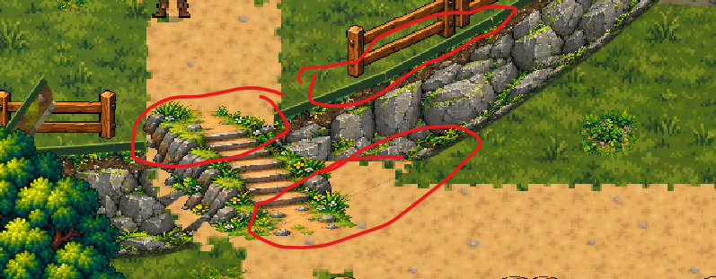
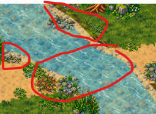

Nghiên cứu địa hình nhiều tầng · r024
Đặc tả nghiên cứu — chưa thay map gameplay. Sơ đồ dưới minh họa cấu trúc, không phải bộ pixel asset mới đã được duyệt.
Vấn đề từ ảnh bạn gửi

Mép gò, mặt đứng, vai bậc, chiếu nghỉ và nền đất cần là một bộ ghép thống nhất. Thêm đá/cây không xử lý được phần nối sai.

Một khối cao cần những phần nào?
Đổi số tầng để thấy mặt đứng và dãy bậc phải cùng thay đổi. Nền trên/dưới có diện tích thật; bậc nối hai landing và khoét vào vách.
Đang tải hồ sơ288…